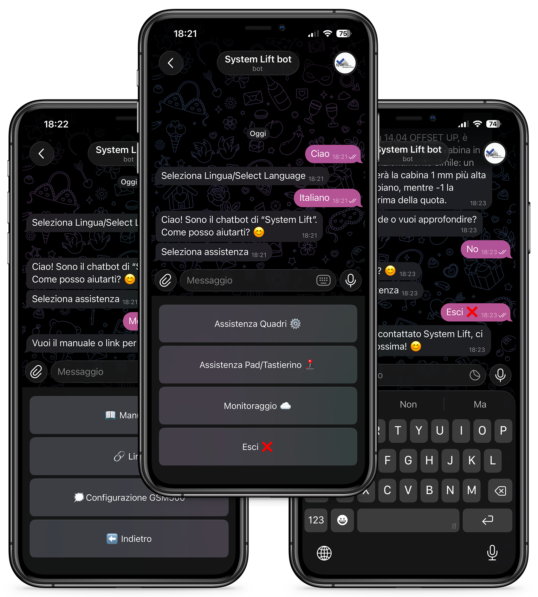
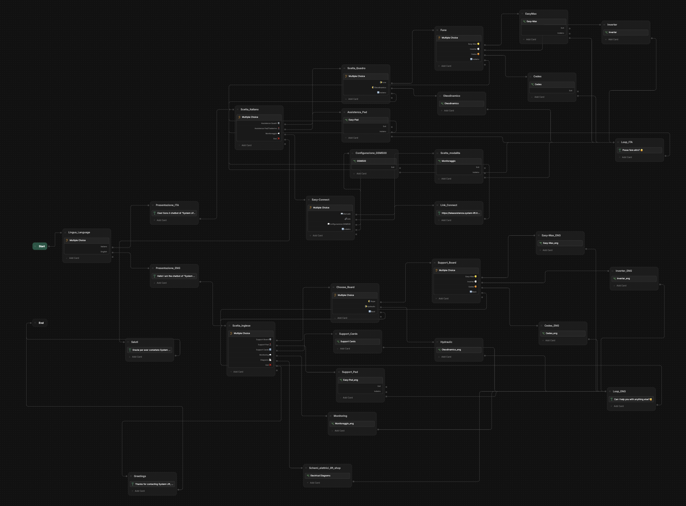

Chatbot Aziendale
Un assistente conversazionale per l'assistenza clienti, costruito per essere scalabile dal primo nodo.
01Obiettivo
Creare un chatbot per l'assistenza clienti capace di rispondere in modo coerente con il contesto della conversazione. L'interazione è guidata da scelte strutturate — l'utente non digita testo libero, ma seleziona tra opzioni proposte dal bot, rendendo il flusso prevedibile, chiaro e controllabile.

IMG GIF
GIF

IMG// clicca su un'immagine per ingrandirla
02Processo di creazione
Il punto di partenza è stato trovare uno strumento che permettesse di costruire il chatbot in modo rapido, senza richiedere infrastruttura custom. La scelta è ricaduta su Botpress dopo una fase di ricerca comparativa.
Dopo aver aperto il profilo e familiarizzato con l'ambiente, ho iniziato costruendo i nodi basilari e popolando la knowledge base con le informazioni aziendali. Qui è arrivato il primo errore significativo: avevo costruito tutto nel main flow, che è diventato rapidamente un blocco monolitico, difficile da leggere e impossibile da scalare.
Ricostruire tutto usando i workflow separati ha richiesto tempo, ma ha trasformato il progetto. La struttura risultante è modulare, ogni flusso ha una responsabilità precisa, il main è pulito. È la differenza tra codice che funziona e codice che si può mantenere.
03Stato del progetto
Il chatbot è attivo e in produzione. Non è un progetto "finito" nel senso classico — viene aggiornato continuamente con nuovi flussi, nuove voci nella knowledge base e piccoli miglioramenti ai messaggi. È uno strumento vivo.